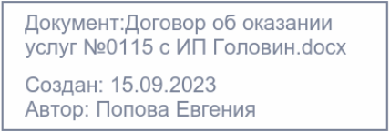
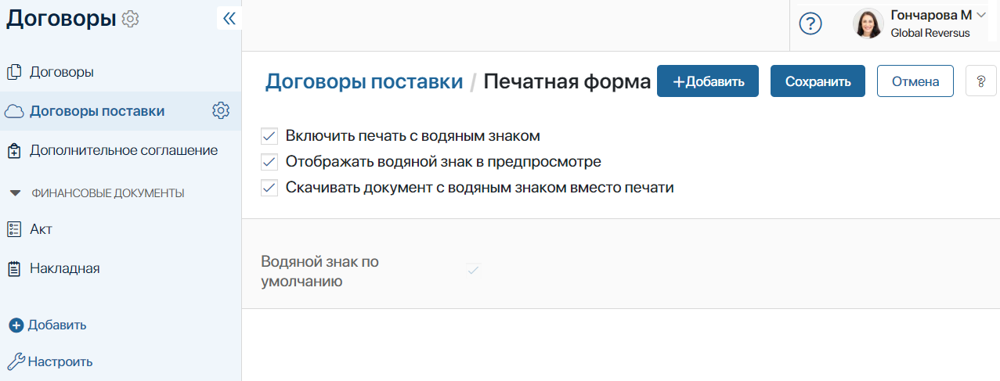
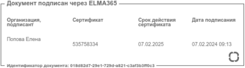
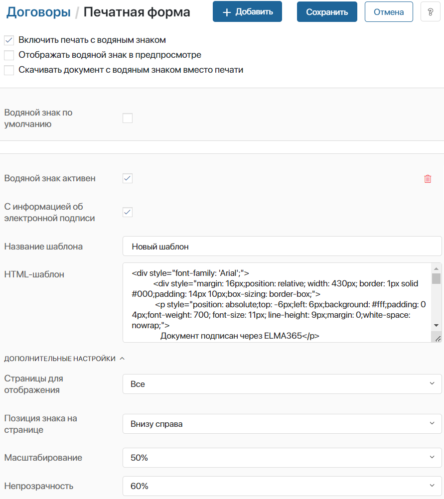

Для каждого приложения системы администратор может настроить отображение водяного знака на документе или файле. Пользователи смогут распечатать документ или сохранить его на локальный компьютер.
Также в бизнес-процесс можно добавить специальный блок Наложение водяных знаков. Это позволяет автоматически наносить водяной знак на файл и сохранять его в переменную. Затем файл можно использовать в ходе процесса, например, выслать его на согласование или автоматически отправить на электронную почту заказчика.
В настройках приложения или блока бизнес-процесса задаётся HTML-шаблон водяного знака. При этом на одном документе можно использовать несколько водяных знаков. Включить можно:
- готовый шаблон с названием документа, датой и автором создания;
- шаблон с данными о подписании документа сертификатом электронной подписи;
- пользовательский шаблон с необходимой информацией.
Рассмотрим подробнее, как включить печать документа в приложении и настроить шаблон водяного знака.
Включить печать с водяным знаком
- Перейдите в настройки приложения, нажав значок шестерёнки рядом с его названием.
- Выберите пункт Печатная форма.
- На открывшейся странице отметьте флажком опцию Включить печать с водяным знаком. По умолчанию включён преднастроенный шаблон водяного знака. Он содержит название документа, дату и автора создания. Знак будет отображаться в правом нижнем углу на каждой странице файла. Эти настройки изменить нельзя.

- Отображать водяной знак в предпросмотре — на форме просмотра приложения типа Документ добавленный файл отображается с водяным знаком;
- Скачивать документ с водяным знаком вместо печати — когда вы нажимаете кнопку Печать на форме просмотра, файл сохраняется на локальный компьютер с водяным знаком в формате .pdf.

Добавить новый шаблон водяного знака
Для каждого приложения можно загрузить свой шаблон водяного знака. Настройки позволяют менять расположение знака, непрозрачность, выбрать страницы, на которых он должен отображаться и т. д.
- Перейдите в настройки приложения, нажав на значок шестерёнки рядом с его названием.
- Выберите пункт Печатная форма.
- Нажмите кнопку + Добавить в правом верхнем углу страницы. Выберите тип шаблона:
- Шаблон по умолчанию — создаётся шаблон с HTML-кодом для водяного знака, преднастроенного по умолчанию. Содержит название документа, дату и автора создания;
- Шаблон с электронной подписью — добавляется шаблон, HTML-код которого содержит данные о подписании файла. В водяном знаке отображается организация, подписант, название или номер сертификата электронной подписи и срок его действия, а также дата подписания.

- Чтобы получить доступ к данным о подписании файла, выберите опцию С информацией об электронной подписи. Это позволит вставить данные об электронной подписи в HTML-шаблон и отобразить их в водяном знаке. Если вы выбрали шаблон, содержащий информацию о подписании, опция будет активирована автоматически.

- Укажите название шаблона и отредактируйте HTML-код. Форматирование в шаблоне выполняется с помощью тегов, как в стандартном HTML-документе.
Пример HTML-шаблона водяного знака:
<table style="margin: 16px 64px 16px 32px; border-color: #233255; max-width: 1000px; height: 130px; border: 2px solid #233255;" cellpadding="6px">
<tbody>
<tr style="height: 58px;">
<td rowspan="2" style="width: 128px; vertical-align: middle; height: 98px;">
<td style=" min-width: 350px; max-width: 700px; text-align: left; vertical-align: top; height: 58px;">
<p><span style=" color: #233255; font-size: 22px;">Документ: {$__name}</span></p>
<p><span style="color: #233255; font-size: 22px;">{if {$__register_name} <>""}Рег.номер:{$__register_name}{end}</span></p>
</td>
<td rowspan="2" style="max-width: 130px; vertical-align: middle; height: 98px;"/>
</tr>
<tr style="height: 40px;">
<td style="text-align: left; vertical-align: top; height: 40px;">
<span style="color: #233255; font-size: 22px;">Создан: {DateTime("DD.MM.YYYY",{$__createdAt})} Автор: {$__createdBy.__name}</span>
</td>
</tr>
</tbody>
</table>
Обратите внимание, в шаблоне водяного знака можно использовать не все теги, атрибуты и CSS-свойства, доступные для языка разметки HTML.
Список разрешённых тегов, атрибутов и CSS-свойств
Разрешённые теги: a, abbr, acronym, address, area, article, aside, b, bdi, big, blockquote, body br, button, caption, center, cite, code, col, colgroup, data, datalist, dd, del, details, dfn, dir, div, dl, dt, em, fieldset, figcaption, figure, font, footer, form, h1, h2, h3, h4, h5, h6, head, header, hr, html, i, img, input, ins, kbd, keygen, label, legend, li, main, map, mark, menu, menuitem, meter, nav, ol, optgroup, option, output, p, pre, progress, q, rp, rt, ruby, s, samp, section, select, small, span, strike, strong, sub, summary, sup, table, tbody, td, textarea, tfoot, th, thead, time, tr, tt, u, ul, var, wbr. Разрешённые атрибуты: abbr, accept-charset, accept, accesskey, action, align, alt, autocomplete, autosave, axis, bgcolor, border, cellpadding, cellspacing, challenge, char, charoff, charset, checked, cite, clear, color, cols, colspan, compact, contenteditable, coords, datetime, dir, disabled, draggable, dropzone, enctype, for, frame, headers, height, high, href, hreflang, hspace, ismap, keytype, label, lang, list, longdesc, low, max, maxlength, media, method, min, multiple, name, nohref, noshade, novalidate, nowrap, open, optimum, pattern, placeholder, prompt, pubdate, radiogroup, readonly, rel, required, rev, reversed, rows, rowspan, rules, scope, selected, shape, size, span, spellcheck, src, start, step, style, summary, tabindex, target, title, type, usemap, valign, value, vspace, width, wrap. Разрешённые CSS-свойства: align-content, align-items, align-self, all, animation, animation-delay, animation-direction, animation-duration, animation-fill-mode, animation-iteration-count, animation-name, animation-play-state, animation-timing-function, backface-visibility, background, background-attachment, background-blend-mode, background-clip, background-color, background-image, background-origin, background-position, background-position-x, background-position-y, background-repeat, background-repeat-x, background-repeat-y, background-size, border, border-bottom, border-bottom-color, border-bottom-left-radius, border-bottom-right-radius, border-bottom-style, border-bottom-width, border-collapse, border-color, border-image, border-image-outset, border-image-repeat, border-image-slice, border-image-source, border-image-width, border-left, border-left-color, border-left-style, border-left-width, border-radius, border-right, border-right-color, border-right-style, border-right-width, border-spacing, border-style, border-top, border-top-color, border-top-left-radius, border-top-right-radius, border-top-style, border-top-width, border-width, bottom, box-decoration-break, box-shadow, box-sizing, break-after, break-before, break-inside, caption-side, caret-color, clear, clip, color, column-count, column-fill, column-gap, column-rule, column-rule-color, column-rule-style, column-rule-width, column-span, column-width, columns, content, counter-increment, counter-reset, cursor, direction, display, empty-cells, filter, flex, flex-basis, flex-direction, flex-flow, flex-grow, flex-shrink, flex-wrap, float, font, font-family, font-feature-settings, font-kerning, font-language-override, font-size, font-size-adjust, font-stretch, font-style, font-synthesis, font-variant, font-variant-alternates, font-variant-caps, font-variant-east-asian, font-variant-ligatures, font-variant-numeric, font-variant-position, font-weight, gap, grid, grid-area, grid-auto-columns, grid-auto-flow, grid-auto-rows, grid-column, grid-column-end, grid-column-gap, grid-column-start, grid-gap, grid-row, grid-row-end, grid-row-gap, grid-row-start, grid-template, grid-template-areas, grid-template-columns, grid-template-rows, hanging-punctuation, height, hyphens, image-rendering, isolation, justify-content, left, letter-spacing, line-break, line-height, list-style, list-style-image, list-style-position, list-style-type, margin, margin-bottom, margin-left, margin-right, margin-top, mask, mask-clip, mask-composite, mask-image, mask-mode, mask-origin, mask-position, mask-repeat, mask-size, mask-type, max-height, max-width, min-height, min-width, mix-blend-mode, object-fit, object-position, opacity, order, orphans, outline, outline-color, outline-offset, outline-style, outline-width, overflow, overflow-wrap, overflow-x, overflow-y, padding, padding-bottom, padding-left, padding-right, padding-top, page-break-after, page-break-before, page-break-inside, perspective, perspective-origin, pointer-events, position, quotes, resize, right, row-gap, scroll-behavior, tab-size, table-layout, text-align, text-align-last, text-combine-upright, text-decoration, text-decoration-color, text-decoration-line, text-decoration-skip, text-decoration-style, text-indent, text-justify, text-orientation, text-overflow, text-shadow, text-transform, text-underline-position, top, transform, transform-origin, transform-style, transition, transition-delay, transition-duration, transition-property, transition-timing-function, unicode-bidi, user-select, vertical-align, visibility, white-space, widows, width, word-break, word-spacing, word-wrap, writing-mode, z-index. |
В шаблоне можно использовать контекстные переменные. Они должны выглядеть следующим образом: {$имя_переменной}. Имя переменной уникально и пишется латинскими буквами, например, {$kontragent}. В примере выше в шаблон подставлены название документа, регистрационный номер, автор и дата создания.
Для отображения данных об электронной подписи в HTML-шаблоне используется конструкция {$signInfo.data.parameter_name}. Например, название провайдера можно добавить с помощью значения {$signInfo.data.provider_name}.
- В дополнительных настройках выберите, на каких страницах документа отображать водяной знак, задать его расположение, масштабирование и непрозрачность.
- Создать можно неограниченное количество шаблонов. Чтобы применить шаблон к документам в приложении, в настройках каждого шаблона отметьте опцию Водяной знак активен. При этом включить можно несколько шаблонов сразу.
- Чтобы удалить шаблон водяного знака, нажмите на значок корзины.
- Выполнив настройки, нажмите кнопку Сохранить в правом верхнем углу страницы.
Теперь в карточке приложения типа Документ появится кнопка Печать. С её помощью пользователи смогут открыть документ с водяным знаком, распечатать его или сохранить на компьютер.
Настроить печать для файла из приложения типа «Стандартное» и «Событие»
Если в приложениях типа Стандартное или Событие добавлено свойство типа Файлы, вы можете настроить печатную форму для файла, добавленного в поле. Для этого:
- В настройках приложения включите опцию печати с водяным знаком и настройте шаблон, как описано выше.
- Перейдите в расширенный режим настройки форм приложения и в дизайнере интерфейсов выполните настройку формы просмотра:
- если добавленный в поле файл нужно показывать ссылкой, без отображения его содержимого, добавьте виджет Кнопки: Скачать и Редактировать;
- чтобы пользователи смогли видеть содержимое добавленного в свойство файла, используйте виджет Загрузка файла с предпросмотром.
- Каждый из виджетов содержит кнопку Печать, с помощью которой пользователи смогут распечатать файл с водяным знаком или загрузить его на компьютер.
- Сохраните и опубликуйте настроенную форму.
Подробнее о том, как работать с печатной формой документа, читайте в статье «Печать документа с водяным знаком».